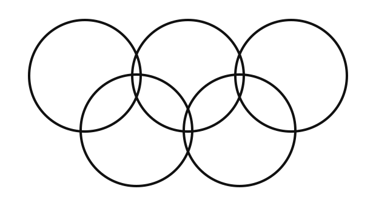
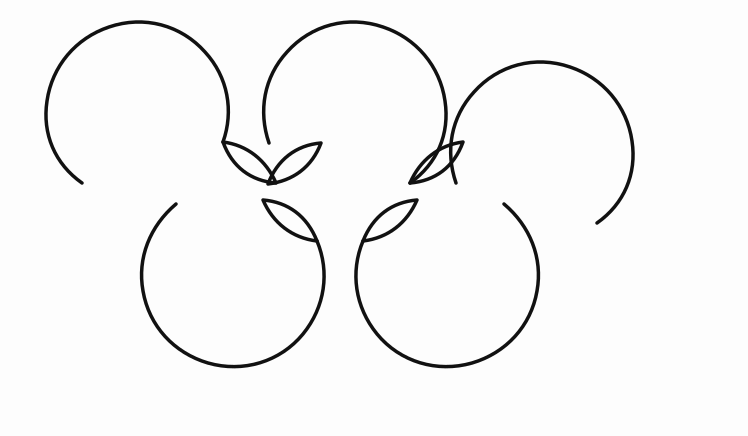
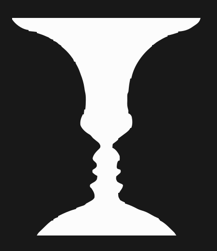

UI 디자인은 단순히 예쁘게 만드는 것이 아닙니다.
사용자가 무엇을 먼저 보고 → 어떤 정보끼리 연결해서 이해하고 → 다음 행동을 어떻게 찾게 할지 시각적으로 결정합니다.
게슈탈트의 법칙이란?
시각적 요소를 개별적으로 보기보다 하나의 의미 있는 전체 형태로 묶어서 인지하는 방식을 설명하는 심리학 원리입니다.
근접성 — 가까이 있으면 같은 그룹으로 봅니다.
- 가까운 요소들을 자동으로 하나의 그룹으로 묶어 인식합니다.
- 모양이나 색이 달라도 거리가 가까우면 한 집합처럼 보일 수 있습니다.
- 멀리 떨어지면 서로 독립된 정보로 인식하기 쉽습니다.
UI 적용: 상품명·설명·가격처럼 관련된 정보는 가깝게, 다음 상품이나 다른 섹션과는 더 큰 여백으로 구분합니다.
유사성 — 비슷하게 생기면 같은 그룹으로 봅니다.
색, 형태, 크기 등이 비슷한 요소에서 패턴과 연관성을 찾습니다.
UI 적용: 같은 역할의 버튼·카드·메뉴에는 같은 시각 규칙을 반복합니다.
폐쇄성 — 일부가 없어도 완성된 형태로 봅니다.
형태가 완전히 이어져 있지 않아도 뇌가 빠진 부분을 채워 완전한 형태로 인식합니다.
UI 적용: 일반 레이아웃보다는 로고·아이콘·그래픽에서 쉽게 확인할 수 있습니다.
공통영역 — 같은 영역 안에 있으면 한 그룹으로 봅니다.
같은 배경색, 박스, 경계 안의 요소는 하나의 그룹으로 인식하기 쉽습니다.
UI 적용: 섹션 배경이나 카드 경계로 콘텐츠를 구분할 수 있지만 모든 것을 카드로 감쌀 필요는 없습니다. 여백만으로도 그룹을 만들 수 있습니다.
연속성 — 시선은 이어지는 방향을 따라갑니다.
같은 방향으로 반복되는 요소를 하나의 흐름으로 인식합니다.
UI 적용: 리스트, 퀵메뉴, 가로 캐러셀에서 다음 카드 일부를 보여주면 콘텐츠가 계속된다는 단서가 됩니다.
간결성 — 복잡한 형태도 가능한 단순하게 이해합니다.


(a)는 교차선이 많아도 여러 조각보다 다섯 개의 단순한 원으로 인식하기 쉽습니다. (b)는 같은 배치를 복잡한 개별 조각으로 보이게 한 비교 그림입니다.
핵심: 뇌는 복잡한 시각 정보를 가능한 단순하고 규칙적인 형태로 정리해 이해합니다. 현재 SVG 예시는 추후 교체할 수 있도록 이미지 파일로 분리되어 있습니다.
전경과 배경 — 무엇을 전경으로 보느냐에 따라 형태가 달라집니다.

루빈의 컵 — 컵 또는 마주 보는 두 얼굴
같은 그림도 무엇을 전경으로 보느냐에 따라 가운데의 컵으로 보이기도 하고 양쪽의 두 얼굴로 보이기도 합니다.
UI 적용: 중요한 콘텐츠가 전경으로 분명히 보이고 배경과 충분히 구분되어야 합니다.
여백은 남는 공간이 아닙니다.
무엇이 같은 그룹이고 무엇이 다른 그룹인지 알려주는 디자인 요소입니다.